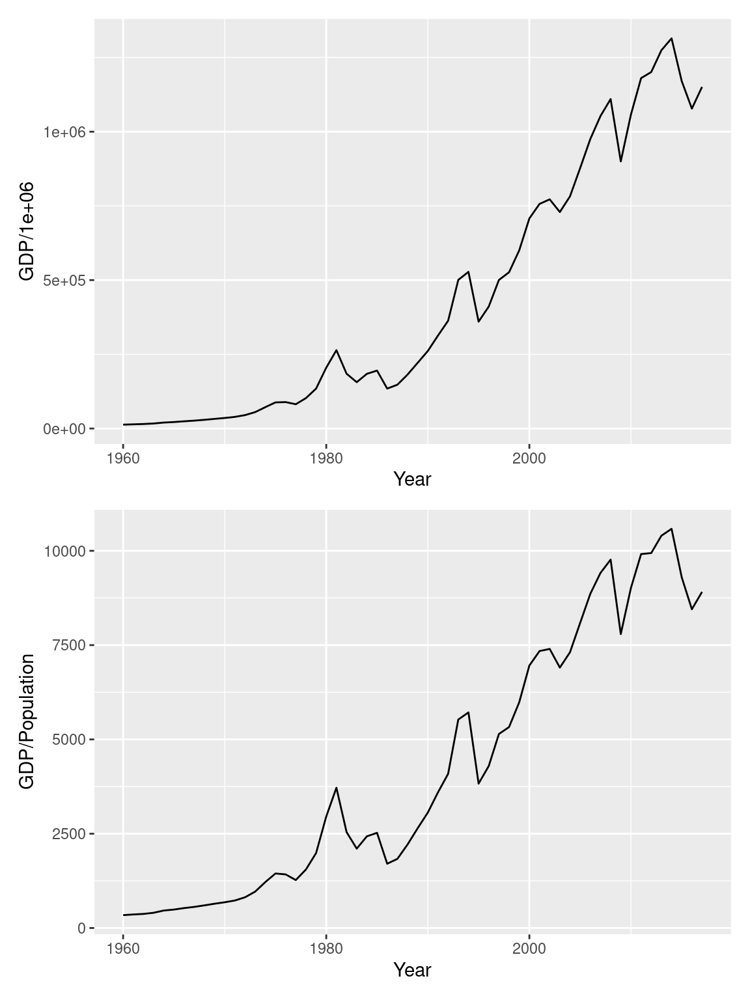
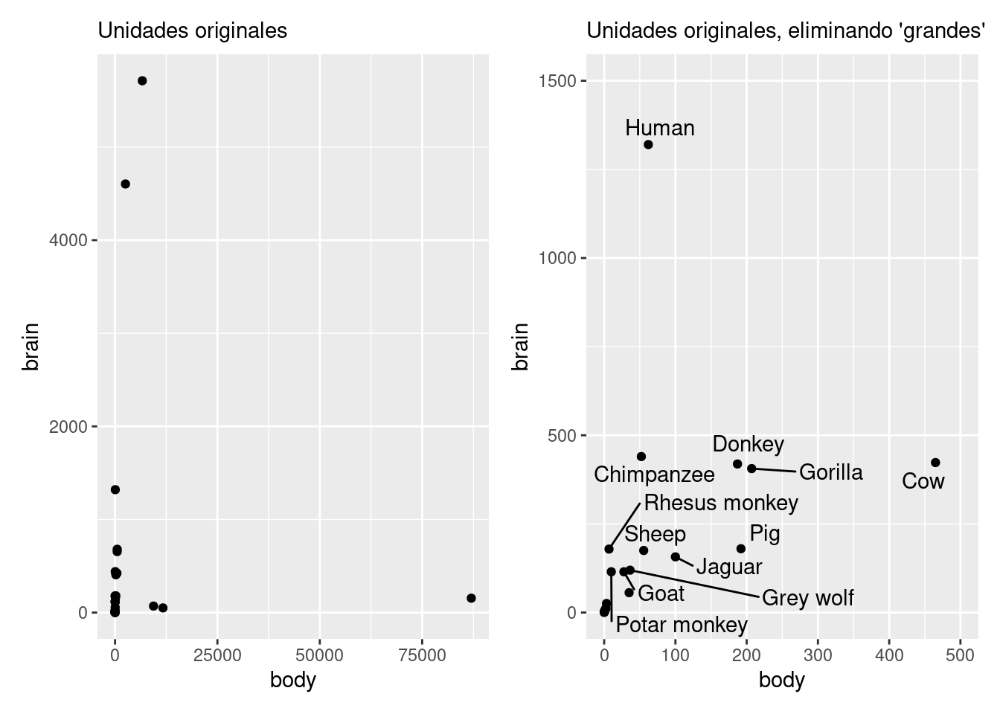
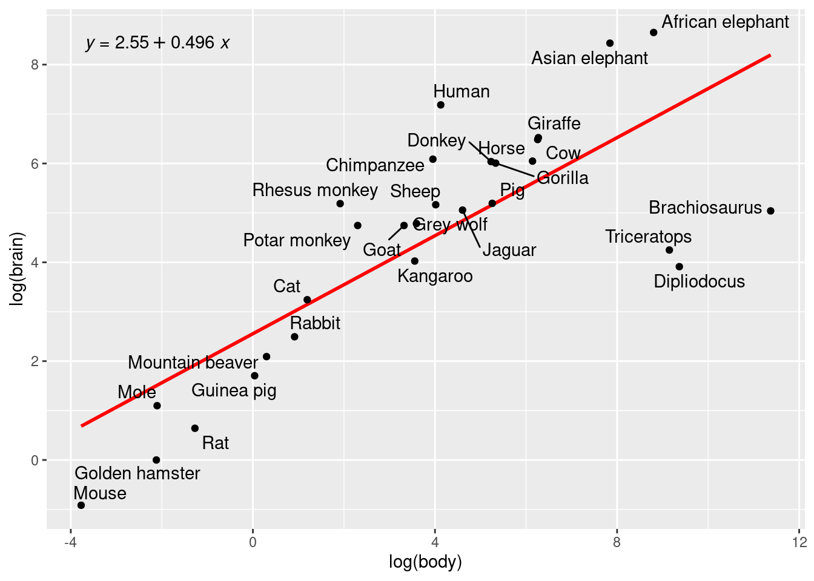

Apéndice: Transformaciones
En ocasiones es conveniente transformar los datos para el análisis, el objetivo de los ajustes es simplificar la interpretación y el análisis al eliminar fuentes de variación conocidas, también es común realizan transformaciones para simplificar los patrones.
Algunos ejemplos donde eliminamos efectos conocidos:
Cuando analizamos el precio de venta de las casas podemos eliminar la variación debida al tamaño de las casas al pasar de precio de venta a precio de venta por metro cuadrado. De manera similar al analizar las propinas puede convenir considerar la propina como porcentaje de la cuenta.
En series de tiempo cuando los datos están relacionados con el tamaño de la población podemos ajustar a mediciones per capita (en series de tiempo PIB). También es común ajustar por inflación, o poner cantidades monetarias en valor presente.
mex_dat <- global_economy |>
filter(Code == "MEX")
pib <- ggplot(mex_dat, aes(x = Year, y = GDP / 1e6)) +
geom_line()
pib_pc <- ggplot(mex_dat, aes(x = Year, y = GDP / Population)) +
geom_line()
pib / pib_pc
Adicionalmente podemos recurrir a otras transformaciones matemáticas (e.g. logaritmo, raíz cuadrada) que simplifiquen el patrón en los datos y la interpretación.
Veamos un ejemplo donde es apropiado la transformación logaritmo.
Usamos los datos Animals con información de peso corporal promedio y peso cerebral promedio para 28 especies. Buscamos entender la relación entre estas dos variables, e inspeccionar que especies se desvían (residuales) del esperado. Comenzamos con un diagrama de dispersión usando las unidades originales
animals_tbl <- as_tibble(Animals, rownames = "animal")
p1 <- ggplot(animals_tbl, aes(x = body, y = brain, label = animal)) +
geom_point() +
labs(subtitle = "Unidades originales")
p2 <- ggplot(animals_tbl, aes(x = body, y = brain, label = animal)) +
geom_point() + xlim(0, 500) + ylim(0, 1500) +
geom_text_repel() +
labs(subtitle = "Unidades originales, eliminando 'grandes'")
(p1 + p2)
Incluso cuando nos limitamos a especies de menos de 500 kg de masa corporal, la relación no es fácil de descrubir.En la suguiente gráfica hacemos la transformación logaritmo y obtenemos una gráfica más fácil de leer, además los datos se modelarán con más facilidad.
p3 <- ggplot(animals_tbl, aes(x = log(body), y = log(brain), label = animal)) +
geom_smooth(method = "lm", se = FALSE, color = "red") +
geom_point() +
geom_text_repel() +
stat_poly_eq(use_label(c("eq")))
p3## `geom_smooth()` using formula = 'y ~ x'
La transformación logaritmo tiene también ventajas en interpretación, para diferencias chicas en escala log, las diferencias corresponden a diferencias porcentuales en la escala original, por ejempo consideremos la diferencia entre el peso en escala log de humano y borrego: 4.13 - 4.02 = 0.11. Confirmamos que el humano es aproximadamente 11% más pesado que el borrego en la escala original: 62/55.5 - 1 = 0.12
animals_tbl <- animals_tbl |>
mutate(log_body = log(body),
log_brain = log(brain))
animals_tbl |>
filter(animal == "Human" | animal == "Sheep") |>
arrange(body) |>
gt::gt() |>
gt::fmt_number()| animal | body | brain | log_body | log_brain |
|---|---|---|---|---|
| Sheep | 55.50 | 175.00 | 4.02 | 5.16 |
| Human | 62.00 | 1,320.00 | 4.13 | 7.19 |
Y podemos usarlo también para interpretar la recta de referencia \(y = 2.55 + 0.5 x\) , para cambios chicos: Un incremento de 10% en masa total corresponde en un incremento de 5% en masa cerebral.
El coeficiente de la regresión log-log, en nuestro ejemplo 0.5, es la elasticidad y es un concepto común en economía.
Justificación
Para entender la interpretación como cambio porcentual recordemos primero que la representación con series de Taylor de la función exponencial es:
\[e^x = \sum_{n=0}^\infty \frac{x^n}{n!}\]
Más aún podemos tener una aproximación usando polinomios de Taylor, en el caso de la exponencial el \(k\)-ésimo polinomio de Taylor está dado por:
\[e^\delta \approx 1 + \delta + \frac{1}{2!}\delta^2 + \dots + \frac{1}{k!}\delta^k\]
y si \(\delta\) es chica (digamos menor a 0.15), entonces la aproximación de primer grado es razonable y tenemos:
\[Ae^{\delta} \approx A(1+\delta)\]
dat <- tibble(delta = seq(0, 1, 0.01), exp_delta = exp(delta), uno_mas_delta = 1 + delta)
ggplot(dat, aes(x = uno_mas_delta, y = exp_delta)) +
geom_line() +
geom_abline(color = "red") +
annotate("text", x = 1.20, y = 1.18, label = "y = x", color = "red", size = 6)